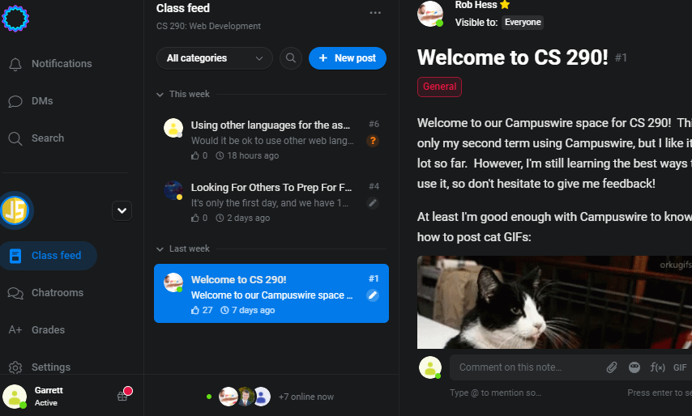

scottga@oregonstate.edu
2nd Year Junior Standing
I attempted to create a forum and chat room once. There were many security flaws in editing/posting and the credentials were handled very poorly. This experience illuminated the complexities of web development for me as it was the first time I tried to do anything with a server and database.
I hope to solidify my understanding of web development past my prior experience as a hobbiest in high school. I want to fully understand how to utilize client and server side JS and make responsive websites with CSS and JS.

When I went to Berlin and Munich in Germany (pre-covid of course), I was thoroughly dissappointed by the coffee there. Most of the local coffee shops used light-roast beans and heavily dilluted it with creamer. The only place to find that bitter-sweeet dark-roasted coffee was at Starbucks. I proceded to get my coffee from Starbucks in shame for the rest of the trip. Nothing wrong with Starbucks, I would just prefer to support local places.